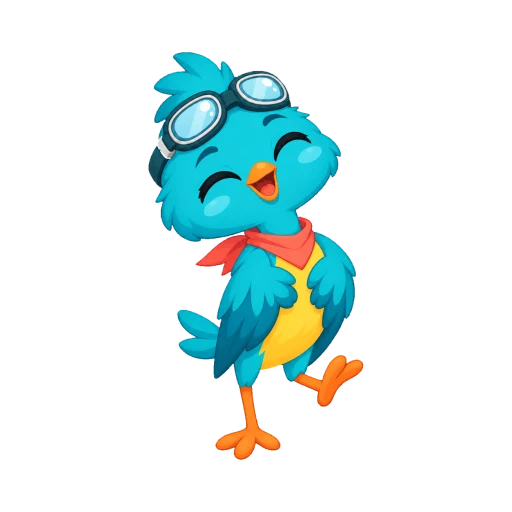
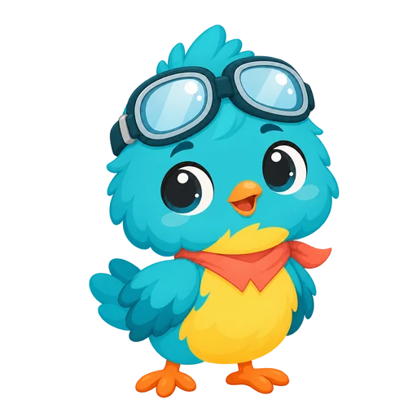
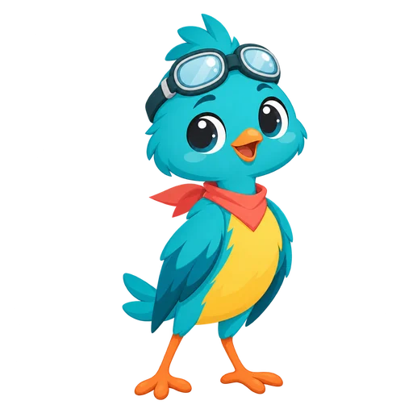
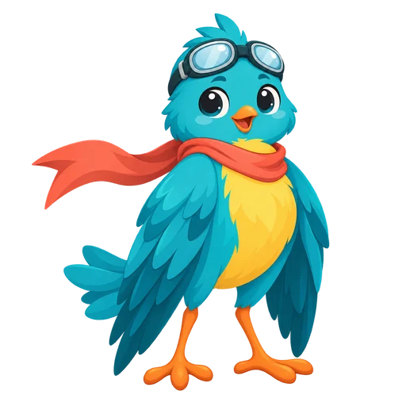
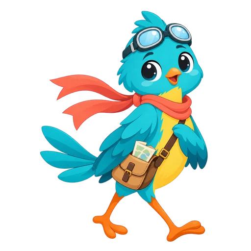
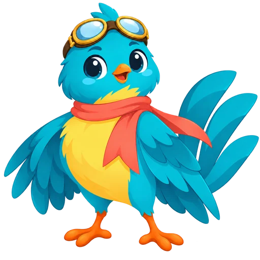

Schnelllesen & Leseverständnis
Starte mit einem kurzen Lesetest, dann trainierst du ein paar Minuten am Tag. Pipzi misst Tempo und Verständnis zusammen, damit dein Wochenwert echt ist.
Google Play

Kostenloser Lesegeschwindigkeit-Test
Miss deine Wörter pro Minute und dein Textverständnis in etwa 2 Minuten – direkt im Browser.
Zum Test- Starte mit einem kurzen Lesetest (etwa 2 Minuten), um deinen Ausgangswert zu finden.
- Folge einem täglichen Pfad aus kurzen Lektionen, die dein Lesetraining an dein Tempo anpassen.
- Übe mit Aufgaben, die von der Leseforschung inspiriert sind: Pacer für den Fokus, Überfliegen und Scannen, Vorschau und Wortschatzarbeit.
- Beantworte nach jedem Text ein paar Fragen, damit Tempo und Leseverständnis gemeinsam wachsen.
- Dein Tempo passt sich nach jeder Lektion an: schneller, wenn du gut verstehst, sanfter, wenn nicht.
- Jede Woche misst ein neuer Wochentest deine Lesegeschwindigkeit und zeigt dir, wie weit du gekommen bist.
- Hunderte eigens geschriebene Texte für jedes Niveau
- Gemeinfreie Klassiker in deiner Sprache
Pipzi wächst mit dir
Sechs Formen in 52 Wochen – vom Küken zum Meisterleser.




